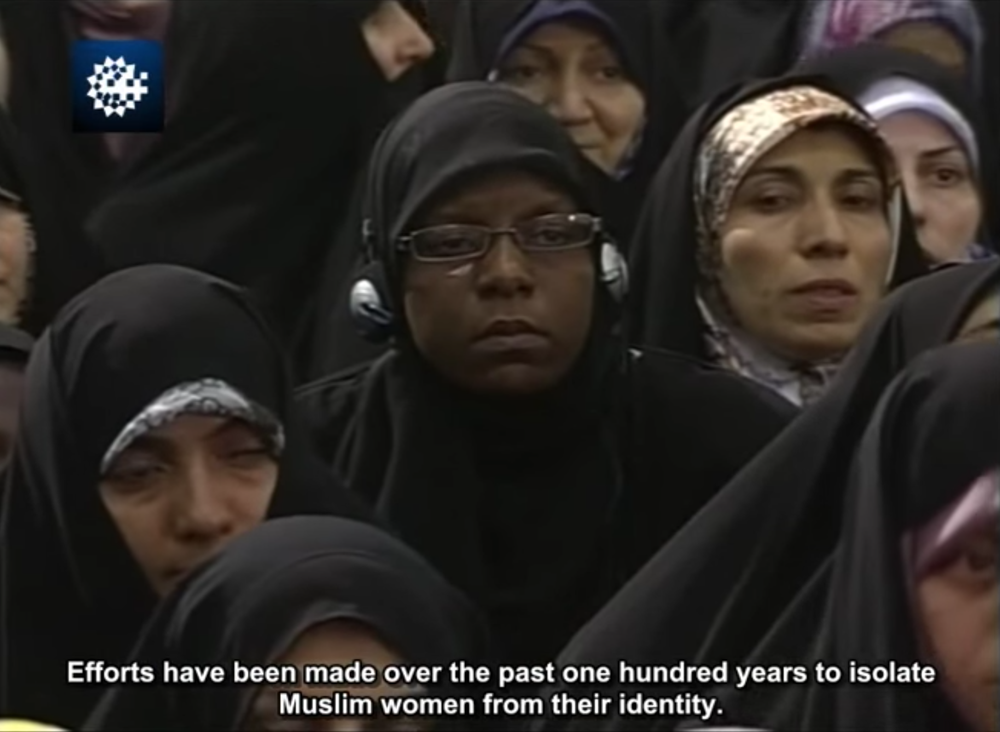
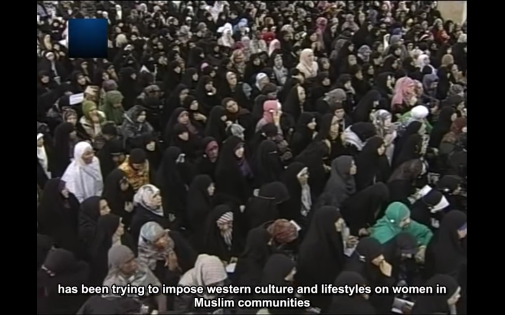
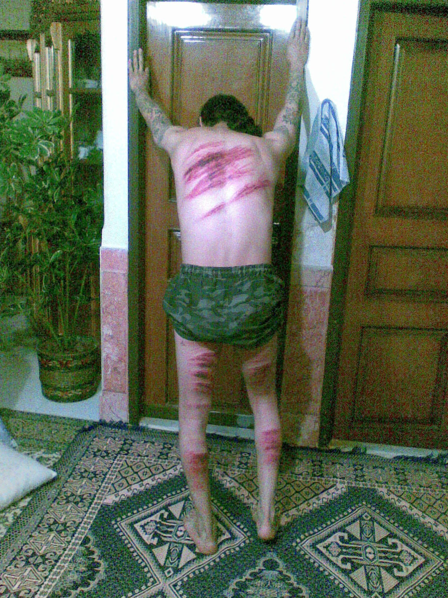

My country, do I belong here?
My thesis brings together narratives from the perspective of a hybrid identity and being conflicted with or exposed to gender inequality, segregation, racism and violence in Iran and in the Netherlands 1 This hybrid identity constitutes itself across two cultures and two identities. One of them being, an identity searching for the meaning of belonging. 2 The other, an identity in a veiled society. 3 Highlighting these differences from my background make me understand the connection, of me being an individual woman in-between the two cultures better.
I’ve always found it interesting why women have to conceal their bodies, because of claims that “men cannot control their sexuality”. The men have been so powerful throughout history, always dictating the lives of others, of women. Not only in Iran but, in all societies, we have been dealing with dominance by men and overwhelming control by men. With this thesis I saw an opportunity to address this issue by using poetry (what paradoxically enough has been an important part of Iranian culture), to create my own ghazals. 4 Today, Iranian women are “repressed prisoners” of a patriarchal culture that traditionally prevents the growth of female subjects. This for me was reason enough to write about my own experiences.
I will take the reader through a poetic narrative of realities in what I coin “a veiled society”. Within the space of my layout of this thesis I experiment with the footnotes and the legal paragraphs of the Iranian constitution (Sharia), and thus make it more understandable and show how these vague constitutions and laws forcefully suppress Iranian people and their right to speak up. Therefore, through the notion of fiction, I am able to be a voice to the voiceless, to symbolize what has been taken away by the laws of the constitution. 5
2. Bell Hooks, in her book Belonging: A Culture of Place, talks about the notion of belonging, having a place and of feeling that you are allowed to be yourself there. Her discussion of trauma and the need for psychological healing is also a key driving force behind her discussion of the need to both find a place to belong and a place of community.
3. With which I refer to the Republic of Iran.
4. Ghazal derives from my understanding of a short poem most likely about love, beauty and women (often) written by men.
5. My intent is neither to insult the religion Islam as such, nor any religious subject, nor to make statements against this religion. Instead, my focus lies on the problematic regime in the Islamic Republic of Iran that the Iranian people are facing. It is a personal account, written – from my point of view as an Iranian woman – who has grown up in the Netherlands.
Growing up in a small village, being part of the small group of immigrants might play a role in what belonging means to me. What you have in common or what differentiates you with people around you shapes you as a person. Thus, belonging plays a role in connecting individuals to the social. It involves the sense of identification, recognizing with one another. 7 And I’ve never felt in place in that sense. Gloria Wekker stated in her book White Innocence that in Dutch common sense, the remarkable thing is that when ethnicity is invoked, it is always “they”, the other, the allochtonen, who are referenced, not autochtonen. It is still whites, and the others. 8 Maybe it is this, that has been unconsciously a state of mind, for not feeling like I belong. 9 I’ve always felt the unease of claiming home of both locations and identities. I feel both the shame of being Iranian and also denying being part of the Dutch culture. A question often asked to allochtonen, “where are you from?” and then when asked again “No, but where are you really from?” has been a problematic situation that the person, having a color has been dealing with. Always apologizing for giving the wrong answer. Laughing it off as if it is oke we have been put in this situation in the first place. My memories make me feel alive, they give my identity meaning. Without these memories my identity is even more scattered. They are my legacy, just like I inherited my parents their memories. I find myself clinging on to my heritage. Wearing, showing, cooking and sharing the many things that my heritage cultured passed down on me, it helps me make up my personal presence, helping me to understand myself. Cultural historian Mihaly Csikszentmihalyi argued 10 that we are attached to these trinkets because they keep us grounded in the present and help us remember the past. In that sense, the objects or way of acting becomes a vital role in how we construct our sense of self. It is a performance to understand myself better.
For Iranians poetry is a way they remember themselves, they see poetry as an important aspect of who they are. It has become a collective memory and is an art form in itself. The culture that I so badly wanted to be part of, in fact, I was unable to be a part of because this important aspect of the culture that remains in parts hermetic to me. The language to me, was never part of my identity. Even though, it was the only way of communication with my family. I had to find my way in expressing complicated situations in easy words. This left me with a lot of frustrations and miscommunications. But lately, as I grow older, I discover more beauty in the phrases that I use. Something simple as “I miss you” “Delam basad tang shode” literally translated “My heart is shrinking for you”. It has become more and more one of those trinkets that keep me connected to my heritage culture. The language marks the absence of the heritage land. And honours its traditions and values.
I grew up with a lot of respect for my family and Iranian culture. Being very close with my family, aunt’s, cousins, they always give me tons of love, support and encouragement. However, I don’t admire everything about Iranian culture. As I am growing older and having the luck of looking from an outsider perspective, I am understanding the reality of woman in Iran more. The shifts between countries as child has shaped my thoughts on this subject and how much is being taken from the society especially their women. This always makes me question “what if I grew up in Iran as a woman?”. Ending up thinking about how grateful I am for the possibility to decide for myself, what I think about religion, human rights, and being able to speak up. And how important it is for exiled people to discuss this subject matter to give a voice to the women of Iran. For this reason, I am using memories, events and artist that deal with this matter, to represent to struggle of Iranian women. Many artists use the political issues to feel impowered.
Shirin Neshat, who is an Iranian exiled visual artist, argues that within oppressed societies, culture becomes more activated. 11 It serves a purpose and there is more demand for it. It helps the people to remain inspired and helpful. I’ve noticed that many of the works I make, the focus lays on the same subjects, the problematic of an oppressed society.
When you look at the Iranian history of poetry there is always this manifestation of pain or darkness. 12 They are echoes of ur own griefs. And the violence and pain that the Iranian society has been through. The men have been so powerful throughout history, always dictating the lives of others. The last 40 years, all that the Iranian people have gotten from the government was oppression. 13 Which is the complete opposite of the perception the world has. Looking at the recent upraising’s in the country, you see that the women are fighters and unafraid to speak up about the problems and oppression they face. 14
7 May, Vanessa. “Self, Belonging and Social Change.” Sociology45, no. 3 (2011): 363-78. www.jstor.org/stable/42857573
8 Wekker, Gloria. White Innocence (London: Duke University Press 2016) 22.
9 Allochtoon, literally means “emerged from other soil” is widely used to refer to immigrants and their descendants in the Netherlands. The word autochtoon, is the opposite of the word corresponded to the ethnic Dutch.
10 Jennifer Ouellette, Personal Identity Is (Mostly) Performance (Blog) 31-01, 2014 https://www.theatlantic.com/health/archive/2014/01/personal-identity-is-mostly-performance/283043/
11 Detroit Institute of Arts, “Shirin Neshat for the DIA: Being a Political Artist” (March 2013) https://www.youtube.com/watch?v=29Cp2qq7258
12 (S. Sylwia, 2014) “Also the richness of vocabulary relating to sadness is reflected in the whole Persian literature. It is one of the most important spheres of Persian culture where the notion of sorrow becomes manifested so clearly. At the same time, it is also one of the most significant sources of knowledge about the culture of Iran, including the concept of sadness. Although poets underline the value of sadness, at the same time, they perceive it as a difficult and painful feeling. Sadness in Persian poetry has been repeatedly described as intense suffering, a severe force that is difficult to endure.”
13 Since the Islamic Revolution in 1979, where the last monarch of Iran was overthrow.
14 Masih Alinejad is founder of the White Wednesday campaign against forced veiling laws in Iran. Which has gathered widespread support among women and girls in Iran in recent years. Alinejad has encouraged Iranian women to share photographs of themselves without a hijab or wear white headscarves every Wednesday as a form of protest. As of July 2019, any Iranian in the country sending pictures to White Wednesdays could face up to 10 years in prison, but yet this does not keep women from doing it.
The reason for choosing this methodology has the following reasons, one being a dialogical one, the quality of being in a dialogue with oneself or viewing things from different perspectives. Living two perspectives means I can look to issues from different cultures and adapt to their attitudes and behaviours. Diaspora identities are those which are constantly producing and reproducing themselves anew, through transformation and difference. By the recognition of a necessary heterogeneity and diversity; by a conception of ‘identity’ which lives with and through, not despite, difference; by hybridity as Stuart Hall stated. 16 This way I have an advantage on how to combine values or blend aspects from different cultures that are involved. Navigate through different situations that require different types of behaviour. My story is written from two perspectives. The problematic of that from a young Dutch woman experiences, and that from a young Iranian woman. It tells a collective narrative from two different identities as I am writing this text to communicate my experiences and silences.
Herewith, I further consider also the concept of double-consciousness, a concept that Du Bois developed in order to address the “two-ness” of being. The individual sense of having a feeling as though your identity is divided into several parts. Making it difficult or impossible to have a unified identity. Du Bois has recognised that they, black people, in this case, Iranian women, are living through the eyes of another. Their concept of themselves come from what others say that they are. It also means that the consciousness is something we develop based on the society we live in. 17
Only a character could claim that Iran is a successful model of a state that is not failing. But somehow, the rich culture of the Iranian identity is carried by poetry; their pride is carried by poetry. 18 The country has an old, Pre-Islamic culture of written poetry and it is of an overwhelming importance. The great works of Persian poetry are more than just the collection of the poets itself. Iranians hear and feel echoes of their historical selves in these poems. Poetry from poets like Ferdowsi, who wrote the Persian national epic “Shahnameh” (Book of Kings) in 1010 CE. 19 Which tells the hero tales of ancient Persia and its kings. To this day this poem is classic way Iranian people recall their nationalism. Generations of Iranians have been reading and listening to this masterwork for more than thousand years. Their lives and poetry resemble each other. It is the language of society and a tool that represents their passion and sensitivity. It has been the language of revolutions and became a political action, an act of rebellion and a form of power. Their cultural or nation heroes, are not political or religious leaders but their poets. 20

Fig. 2. A copy of Saadi Shirazi’s works. Retrieved from https://en.wikipedia.org/wiki/File:The_Rose_Garden_-_WDL.tiff

Fig. 3. A copy of Ferdowi’s Shahnameh Manuscript. Retrieved from https://royalasiaticcollections.org/ms-ras-00239-00001-000
For centuries, poets have been writing ghazals. A short poem in which a man often writes about a woman or a feminized lover. And women have been listening to them, provoked them, inspired by them. But rarely created them. Hence, there is an inscribed asymmetry to Ghazals. Simin Behbahani is one of the female poets that changed this age-old pattern. She subverts the definition of the ghazal by placing a man at the poem’s centre, demanding a new emotional space for women. At the same time, they provide men with the possibility of being the desired object for a change.21The men are being unveiled in her ghazals.22 Among Behbahani, other female poets who challenged gender roles in Persian poetry include Tahirih Qurratul-Ayn (1841-52) Parvin Etesami (1907-41) Forough Farrokhzad (1935-67)
I sinned, a sin all filled with pleasure
wrapped in an embraced, warm and fiery
I sinned in a pair of arms
that were vibrant, virile, violent.
In that dim and quiet place of seclusion
I looked into his eyes brimming with mystery
my heart throbbed in my chest all too excited
by the desire glowing in his eyes.
The Sin Forough Farrokhzad
23
You want to erase my being, but in this land I shall remain
I will continue the dance as long as I sustain
My verse as vast as a meadow, its universe rooted in my homeland
In the world of Ghazal, I’m a fleet-footed galloping gazelle
I speak as long as I’m alive; fury, roar and revolt
Your stones and rocks I fear not; I’m flood, my flow you can’t halt
I don’t veil my hair. I’m not Gordafarid nor do I pretend
I’m not the woman your deceit can lock up in your fortress end
I’m lightning; my silence will not adorn the sight
I’m prelude to thunder, till then I illuminate the night
Your arrow may give my eyes strain but in chasing me it’s flying in vain
My back not bow. My head isn’t Esfandiar’s, I vow
I said what I said to defy or to cry; come what may
It’s the voice that shall remain I’ll wither away
Aging and ailing, my steed still on my side
Horseback no longer moves me; it is the dream to ride
For the Dream to Ride by Simin Behbahani
24
Their verses are a manifestation of their engaged awareness of the social and political life of Iranians regardless of race, gender, or religion. Many, or most of them have been banned for many years and continued to be censored in Iran. They have been given a voice to the yearnings of the Iranian people. As I mentioned before, women have been uprising against the regime and oppression, finding the courage to put their lives in dangerous only to speak out about their rights. They are not been doing this as activists but as ordinary women talking from their hearts. The videos later in the text, are showing how the simple acts as wearing nail polish have become a defiance.
The Iranian constitution was adopted in 1979 after the Islamic revolution and was amended in 1989.25
The penal law code was approved by the Islamic Consultancy Parliament in 1991.26
The constitution contains many laws which restrict the flow of information. These laws are often vaguely worded. This leaves a lot of room for interpretation about what is legal and what is not. Not only is it hard for Iranian citizens to understand the laws, it is very unclear what is allowed by the government or not. This way the judges have a lot of room for interpreting what is against the law and what the punishment should be. I state the articles as written in the constitution. But in fact, the punishments are way higher most of the time. Because of the ‘freedom’ the judges have to make decisions about punishments given.
16 Stuart Hall, “Cultural Identity and Diaspora” Framework, No.36, (1990) 235 http://www.rlwclarke.net/Theory/SourcesPrimary/HallCulturalIdentityandDiaspora.pdf
17 Dr. Mother Rants, “Classical Sociologist: W. E. B. Dubois “Double Consciousness and the Veil” (May 2018) https://www.youtube.com/watch?v=hVyKGmTRTvk
18 Neima Jahromi, “Poetry and politics in Iran” (Blog) 14-07, 2015 https://www.newyorker.com/books/page-turner/poetry-and-politics-in-iran?verso=true
19 K.E. Eduljee, “Ferdowsi’s Shahnameh” http://www.heritageinstitute.com/zoroastrianism/shahnameh/
20 Patricia Almarcegui, “Poetry and Memory: the Case of Iran” https://www.iemed.org/observatori/arees-danalisi/arxius-adjunts/quaderns-de-la-mediterrania/qm23/Poetry%20and%20Memory%20Case%20of%20Iran_%20Patricia_Almarcegui_QM23.pdf
21 Laura Mulvey introduced the theory of the “Male Gaze” in her essay Visual Pleasure and Narrative Cinema reflecting on the oblivion of patriarchal society and that women are the subject of heterosexual male control and desire.
22 Farzaneh Milani, Words, not swords (New York: Syracuse University Press, 2011) 162.
23 Sholeh Wolpé, “Sin: Selected Poems of Forugh Frrokhzad” (Fayetteville, University of Arkansas Press, 2007)
24 For the Dream to Ride - Simin Behbahani, 2013.
25 Islamic Consitution of Iran (1979) https://www.wipo.int/edocs/lexdocs/laws/en/ir/ir001en.pdf
26 Islamic Penal Code of Iran (1991) https://www.refworld.org/cgi-bin/texis/vtx/rwmain/opendocpdf.pdf?reldoc=y&docid=52b812384
The Outward Gaze
If you separate women from men, they will never learn how to interact with each other in a normal way. And this will lead to dangerous situations. Not only will they not learn how to interact with each other but I also believe it is belittling, and the more you belittle a woman, the more she starts believing she is the belittled woman. The degradation created by men and his masculine power in society, in this sense becomes a part of the women’s psyche. Women are consistently punished more often than men by the morality police to maintain a stronger control on women’s social freedoms. Making public space less safe for women by making the men feel like they can assault her in public places because they consider the public space their original domain. They start believing that any woman who dares to enter their domain might as well be prepared for the “consequences”.The East Without the West
While the Shah, the king of Iran before the revolution in 1979 constantly focused on westernization and modernizing the country, the leader of the Islamic revolution, Ayatollah Khomeini declared that the Shah was destructing Islam in Iran by doing so. Westernization was at the core of the cultural revolution for Iran. To prevent westernization in the Iranian culture anything that in the eyes of the regime was western was being implemented by Islamic values.Sheer Zan (Lioness)
People in Iran are angry, especially the women, they have always been looking for change. A change that will bring a better life and better rights. No longer do they want to be seen as weak and as a dependent creature. Which is why a lot of women have been standing up for their rights and against the oppression trying over and over again to achieve their goals.Man and “Wife”
Having a relationship is not something similar as one that would occur in the Netherlands. Having a lot of strict rules controlling social lives puts a lot of pressure on young couples. Reflecting upon relationships that couples enter and the rules that they have to obey made me understand the problematic obstacles for women in relationships, such as having almost no right on legal decisions about themselves and their legal status in a relationship.
Don’t put the label of alien on me
She can still recall the perfect vividness of the moment
She was traveling by public transport with her mom
Her mother sat down in a window seat, next to her
an empty seat
Refusing to sit down next to her
She took the seat, one back from hers on the other side of the vehicle
She looked back at her, confused, sad
Her mother did not say a thing and looked away
What was wrong with her?
Why did she not just sit down next to her own mother?
Not wanting to be seen with her mother,
awkwardly acting like she did not know her
Not wanting to be identified as whatever she was
An allochtoon
Emerged from another soil
She almost broke down in tears
Was she angry at herself for not sitting next to her mother?
Or was she angry at her for being identified as an allochtoon?
Can I root here?
Return to the root
Emerge from another soil
There are only a handful of other women
There are only a handful of men
Strong male odours are surrounding the space
A cleric starts yelling at her
“Cover yourself!” he says
“Is this how you advocate hijab?”
“Yes I do, how dare you come outside like this?”
She wanted to tell him not to dictate her
“Cover yourself!”
He said again, more aggressively
“Cover yourself!”
Again
She starts to lose her patience
He does not get to tell her what to do and how to behave because
he can’t control his dick
The invisible leader
27
“Turn back and don’t look at me!”
“You shouldn’t dare to go outside unveiled”
“It’s none of your business” she says
“It is my business! Cover yourself! You have no shame!”
More people start to get involved.
Another woman comes into the conversation
“You don’t have to look at her”
Not bothered by it the cleric keeps going
“you are dishonorable”
“You are shameless”
“Close your eyes”
Says the other girl
28
“I don’t want to close my eyes! you should get out of here!”
29
“So you want to look at me?”
The act of seeing becomes a violation
A sin for the men
From the point of view of Islam
the function of clothing is not to display the body
but to conceal it and to reduce sexual enticement
30
The cleric does not trust his own eyes
The woman has to adapt,
to the men who is incapable of seeing another human being without being driven wild by desire
Blaming her for his sinful acts
Men also starts to get involved in the heated discussion
“Leave her alone”
“It’s enough, leave her alone”
“Stop interfering in other people’s lives”
“You clerics ruined the whole country”
“You should get out of here if you are uncomfortable around
an unveiled woman”
The group surrounded the cleric
No one around him was on his side
You accuse me of the crime of bad hijab?
I will show you bad hijab!
You cannot summon gender equality without women
She can feel people’s eyes burning on her body
Not being covered
Revealing skin
“How dare she coming outside like this?”
“She is a Muslim, she is a whore!”
31
She can hear the judgement from people in her head
It almost feels like betrayal
She feels like you
But she is not like you
belonging, belonging, belonging
The feeling of not belonging
32
Will she ever be able to leave this mobile prison?
The veil
Intended to protect women’s bodies
Intended to keep the body from becoming the sexualized object
Intended to keep of the male gaze
But also protects women from being seen at all
After tasting freedom
For her, wearing the veil symbolizes the deprivation and oppression
A whole world hidden inside
33
A whole self hidden inside
34
The feeling of exile
It is terrible to experience, an unhealable rift forced
between a human being and a native place
Between the self and its true home
Brings her to the sense of belonging through art
The emotional feeling of dislocation and exilic experience
Want to make art about it
Want to write about
Want to talk about it
It’s a way of dealing and curing the feeling of this estrangement
Female exiled artists
Share the same beautiful memories about the homeland
They present their issues through their artwork
35
The oppression
36
27 Constitution – General Principles:
Article 1: The government of Iran is an Islamic Republic, which the nation of Iran based on its
long-held belief in the rule of the truth and the justice of the Qu’ran, and after its victorious
Islamic revolution, under the leadership of marja’-e taqlīd the exalted Grand Ayatollah Imam Khomeini,
has established. The measure was ratified by the 98.2 percent affirmative vote of all the eligible
voters in a referendum that was held on the 10th and the 11th of Farvardīn in the year 1358 of the
solar Islamic calendar, agnate to the first and the second of jumādī al-awlā’ in the year 1399 of the
lunar Islamic calendar.
Article 14: According to the Qur’an: “Allah forbids you not, with regard to those who fight you not for
(your) faith nor drive you out of your homes, from dealing kindly and justly with them. For Allah loveth
those who are just” (80: 8), the government of the Islamic Republic of Iran and Muslims are required to treat
the non-Muslim individuals with good conduct, in fairness and Islamic justice, and must respect their human rights.
This principle is valid for those persons who have not conspired or acted against Islam and the Islamic Republic of Iran.
fig. 3. Retrieved from https://www.wikiwand.com/en/Emblem_of_Iran
fig. 4. Official emblem 1907-1925. Retrieved from https://commons.wikimedia.org/wiki/File:Shirkhorshid.JPG
fig. 5. Official emblem early 1970s. Retrieved from https://fr.m.wikipedia.org/wiki/Fichier:Lion_and_Sun_Colored.svg
fig. 6. Official embled 1980 till present Retrieved from https://www.wikiwand.com/en/Flag_of_Iran
29 There have been numerous women being arrested for removing the Hijab, which illustrates the oppression that women face when attempting to speak out against the oppressive regime. They have been openly challenging the law. Recording the verbal abuse, arrest, and physical attacks, hence the #MyCameraIsMyWeapon movement started. Where women use the hashtag to share their footage. The message of these videos are very clear and very specific, that women want to be able to choose if they wear hijab or not. They want to publicly denounce the morality police and their acts and abuse towards women who are not dressed the way they want them to be dressed. Even though Iran has a major economic crisis which is spreading across the land, the only concern of the government seems to be the hijab. Nonetheless, the issue is beyond the issue of hijab and the control of what women wear. The Islamic law favors men over women, in marriage and divorce laws, women can’t travel without permission of the husband or father, and when a government decides a woman is worth half a man this will create an attitude that women are being treated like second-class citizens.
fig. 7 Respond representative government about the movement. Belittling the movement. Screenshot from twitter.com/AlinejadMasih
30 Farzaneh Milani. “Veils and Words: The Emerging Voices of Iranian Women Writers” (1992) P25
31 The Women of Allah photographs from artist Shirin Neshat, consist out of three elements: the veil, the weapon and the written text. The photographs are both intimate and confrontational. They reflect the traditional repressed status of women in Iran and their power. The text, which is revealed on her skin, on the visible body parts – the only parts of a woman that are allowed to be visible according to the mandatory dress code – is written poetry by woman Iranian writers. The male gaze in the context of Shirin Neshat’s work becomes a sign of sexuality, sin, shame and power. In Neshat’s work, the women returns the gaze, breaking free from centuries of subservience to male or European desire. Her veil does not stanch her sexuality, her gaze is bold and faces the danger. The work constructs a layered image from Islamic culture, not only referring to Iran and the Iranian women but also images for the “Other” the “Muslim other” The visual symbols became a representation of the Muslim societies. The images become stereotypical oriental for the viewer regardless of the artist’s intentions.
Fig 8. Shirin Neshat, Faceless, Women of Allah series, 1994 Retrieved from http://photography-now.com/exhibition/110262
This mindset that is visible is defined by Edward Said as “Orientalism” the western attitude that views Eastern societies as primitive, exotic and inferior. In this case the covered woman indicates that it is located in the Middle East, the primitive, “the Other”. Said argues that the west, looks at the countries and the people through a lens that distorts the actual reality of those places and the people. He calls this lens Orientalism. The way we use to understand the unfamiliar and strange. The people of the Middle East appear different and threatening. The countries that appear different and threatening are in fact very different than people imagen. She appears dangerous, she might be a religious fanatic, the construction of a Jihad, a terrorist. Yet, her photographs not only deconstruct stereotypical Western representations of the Middle East, but also explore the complex position, role, and ideological context of women in Iranian society.
32 Belonging, in the book and movie Persepolis Marjane Satrapi sketches a great example of what this exactly means. The story focuses on the experiences of a young girl growing up during the Islamic Revolution in Iran. Her story tells the impact of war and religious extremism on Iranians, especially women. When the Islamic regime took over. Everyone who supported the revolution was then an enemy of the government. In the book, Satrapi has left Iran with the idea of leaving the “religious country searching for an open Europe”. During her years there, these ideas are tested as Marjane faces other challenges to her survival, such as racism, physical and psychic homelessness and heartbreak. Throughout the book Marjane is seen to frequently be in conflict with herself, her surroundings, and the people around her. She got rejected as a western decadent, and belonged nowhere. When you get into a new culture, you want to integrate. You almost feel like you have to forget about your first culture. And then you lose your identity, you don’t know who you are anymore. When you leave, and come back, you are a foreigner everywhere.
fig. 9 Persepolis Marjane Satrapi. Retrieved from https://filmkrant.nl/recensies/persepolis
33 Constitution: Women’s rights
Article 21: The government must secure the rights of women in all respects, according to the Islamic criteria. The government
must do the following:
1. create an apt environment for the growth of woman’s personality and restore her material and spiritual rights;
2. protect the mothers, especially during the child-bearing and child-rearing periods, andprotect children without guardians;
3. create competent courts to protect the integrity and subsistence of the family;
4. establish a special insurance for widows, elderly women, and women who are without guardians;
5. bestow the custody of children to qualified mothers, whenever in the interests of the children, and in the absence of a legal
guardian.
Article 22: The dignity, life, property, rights, domicile, and occupations of people may not be violated, unless sanctioned by law.
Penal Law: Offenses Against Public Moral
Anyone who explicitly violates any religious taboo in public beside being punished for the act should also be imprisoned from
ten days to two months or should be flogged (74 lashes).
Women who appear in public without a proper hijab should be imprisoned from ten days to two months or pay a fine of 50,000
to 500,000 Rial.
34 Forouhar is an artist that often plays with identity. In the project Signes she shows a set of pictograms that serve to overcome language barriers. But in her pictograms, she shows how we make distinctions are problematic. The fact that the women are wearing the chador shows that these signs are located in the Middle East. This addresses stereotyping of gender roles in Islamic ountries. The space of the women in the signs are restricted and they have way less space than the men. The male and female spaces are being defined by a red line which immediately indicates the male has more space. The veil indicates the boundary between the private and the public. In this respect, the signs are signs of gender difference. But the signs also draw otherness. The male figures are not specifically designated as Arabs but represent a universal standard. It is the feminine that embodies otherness, the Muslim other. “What is disturbing is that such patterns are by no means unusual otherwise, how could we possibly read the pictograms at all?” (Forouhar) The distinctions we make address the problematic gender hierarchy and the otherness in stereotyping.
fig. 11 Parastou Forouhar Signes. Retrieved from https://www.parastou-forouhar.de/portfolio/signes/
35 Said, Edward. “Reflections on exile: and other essays” (Granta, London, 2001).
36 Everything that has to do with the west, is in the eyes of the Iranian authorities equate with the ‘great Satan’. For the young generation, in particular for the women, fashion items become a kind of passive rebellion. Because the mandatory hijab leaves nothing but the small circle of the face, it became the only way for self-expression. Iranian women have become obsessed with their faces because it is the only part of their body they can show. Trying to do everything to make it more delicate, symmetrical and European by changing a lot through plastic surgery and makeup. It is not much about vanity, but it becomes the desire to join a class of Iranians, who look European, travel, have money and live Western lives. Shirin Aliabadi, shows young women who are attempting to explode the restraining of religious regulations. From clothing, to relationships with the other sex, the whole of life is regulated. The artist states “I don’t believe that you automatically become a rebel with a Hermès scarf around your neck, but in the context of the society in which we grew up, within an educational system that has different values to those in the West, the phenomenon of fashion turns into an interesting paradox. But ultimately, these young women’s concern is not to overthrow the government but to have fun.”
fig. 12. Shirin Aliabadi “Hybrid Girls”. Retrieved from http://magazine.landscapestories.net/en/archive/2014/iran/projects/shirin-aliabadi
fig. 13. Conference on ‘Women and Islamic Awakening’ Ayatullah Ali Khamenei Speech. 2012 Screenshots Youtube
The pride goes 120km per hour
37
The hot asphalt melting
We are playing music
Banned rhythms
We take the world to our own use
On our way to the north
It is a 7 hour drive away
40 degrees
We eat fresh pistachios, hazelnuts and walnuts
Screaming out of the windows when we pass tunnels
The farther you go
Is this what being free feels like?
You feel the urge to control and approve every aspect of life
Even of music making
Preventing Western influence by banning
Western music is part of the cultural policy
Then you realised you had a problem;
The young people are not interested in your state-sponsored media
Losing more and more of the youth
You decide to turn to western-inspired pop culture
Just to save your failing revolution
to embody your agenda
“No power can deny peaceful nuclear energy from the Iranian nation”
“I am an honest Iranian, against all violence”
38
When we drive through areas where the morality police are known to patrol
We roll up our windows and turn down the stereo
Women are not allowed to sing publicly
Acts of celebration and public dancing are criminalised
Clerics argued that the sound of a woman’s voice aroused sexual feelings in men
With that change
Music changed;
Not surprising that the government would approve of a song that deals with
breaking up
rather than one that deals with
falling in love
Artists from before the revolution had disappeared
Their songs once sung for love
became a symbol of a lost home instead
My flower in the vase broke in the wind
Come, so that my heart does not moan
The Matthiola doesn’t smell at night anymore
Who has broken off the Matthiola off their branches?
(Song Simin Ghanem - Gole Goldoon)
A lost home
Oh home!
39
“I heard this song, dad, it is amazing do you know it?”
Full excitement she plays the song
“Oh yes, of course”
He starts singing along all the lyrics
Her stomach turns around
The way he sang along
Felt as if he just got reminded of something he had lost
He starts talking about the artist
He knew all the stories
“They killed him in his resident in Germany”
“She died in America because of poverty”
The songs are an emotional reunion between
home and person
“Khak bar sare khodemoon!”
Dirt on our own heads
“What a mistake we made”
“We wanted a revolution that would overthrow
a government killing hundreds of Iranians”
“Now we got a government killing thousands of Iranians in one day”
He starts pouring his heart out
“Just let Trump start his war!”
“Everything better
than letting the clerics get away with how they are ruining us”
40
“Do you think we will ever hear music again?”
A song plays
Listen to it
Everything to hear
Tears started falling down her cheeks immediately
As she knows the song
It reminded her of family
Part of my heart say go, go
Part of my heart says don’t go, don’t go
My heart can’t go on without you
What will I do without you
The world is so small, so small
I’m thinking of you wherever I go
I never leave you
(Soltane Ghalbha by Ahdieh)
The song reminded her of
That same lost home
Nothing to hear
Listening to music became another way to deal with
oppression in the homeland
Artists who deal with issues such as poverty,
Sexism, censorship, homophobia and execution
41
38 The Iranian rapper Amir Tataloo released a new music video the day before the Iran deal was finalized on 14 July 2015. (Iran agreed a long-term deal on its nuclear program with a group of world powers) The music video was called Nuclear Energy and took the Iranian web sphere by storm. The video features members of the Islamic republic navy on a warship singing “This is our absolute right, to have an armed Persian Gulf”. The video and song had support from the regime and its military apparatus. It shocked many Iranians, given that officials have labeled rappers as “westernised”.
Amir Tataloo had been making music underground and was arrested in 2013 for cooperating with foreign satellite stations. The song appears to be confusing when it came out. But it was not, it was a strategy for the regime to gain support from Iran’s youthful population. Since a large number of young Iranians are not responding to media that the Islamic regime labeled “sacred”. If a nation was to attack Iran, would young Iranians rise up to defend their notion? The answer being no, they realised they have to start speaking the language of the youth. Entertain them with propaganda made in their language, because this youngest generation doesn’t understand their religious language.
fig. 14. Amir Tataloo - Energy Hasteei Screenshot. Retrieved from https://www.youtube.com/watch?v=VywTiTVMHts
39 Women in Iran are not allowed to sing, perform solo or produce their own music due to the Islamic Regulations in effect since the revolution, the only way they can sing is as backing singer but never on their own. Conservative clerics say women’s voices have the potential to trigger immoral sensual arousal. Newsha Tavakolian focuses on these women singers by taking photos of them performing in their minds in front of a large audience, in reality this was taking place in a small private studio downtown Tehran. She made CD covers for each of the women, which was her own interpretation of the society she lives in. The CD cases that she made, are (for now) empty.
fig. 15. Newsha Tavakolian “listen”. Retrieved from https://www.newshatavakolian.com/listen


fig. 13. Conference on ‘Women and Islamic Awakening’ Ayatullah Ali Khamenei Speech. 2012 Screenshots Youtube
40 To come back to the term Westernization. In the second half of the twentieth century, western music was very popular. Western pop music sung by Iranian “pop” stars as Ebi, Dariush, Googoosh (most of them live in exile now) may be one of the reasons for the violent reaction of the revolution in 1979. “Going back to our roots” Khomeini (He was the founder of the Islamic Republic of Iran and the leader of the 1979 Islamic Revolution) had always critized this Westernization and called it “the culture of foreigners” (Youssefzadeh, 2000) A great example of the “westernized” Iranian pop artists is the video by Khruangbin that brings together multiple of these (female) artists from before the revolution in their video.
“Music is like a drug, whoever acquires the habit can no longer devote himself to important activities. It changes people to the point of yielding to vice or to preoccupations pertaining to the world of music alone. We must eliminate music because it means betraying our country and our youth. We must completely eliminate it” - Ayatollah Khomeini
Which resulted in no more concerts, radio and television broadcast and popular music were banned, singing became a sin. For this reason, many artists had to leave the country to avoid being arrested, they turn their backs to Iran, and give concerts outside of Iran for the exiled community. The ban applies to state-run radio and TV, but Iranians with satellite dishes were still be able to receive broadcasts originating outside the country. For a short period, the Iranian authorities would aggressively barge into people’s houses to take the satellite dishes away. The government believed that spreading corruption, robbing youths and decadent clothing and sexual problems were all bred by satellite television. But people kept buying new satellites unwilling to surrender for their cultural freedoms.
41 (Constitution) – Freedom of Expression, Government Control, Mass Media
Article 175 (1) The freedom of expression and dissemination of thoughts in the Radio and Television of the Islamic Republic of Iran must be guaranteed in keeping with the Islamic criteria and the best interests of the country.
(2) The appointment and dismissal of the head of the Radio and Television of the Islamic Republic of Iran rests with the Leader.
A council consisting of two representatives each of the President, the head of the judiciary branch, and the Islamic Con-sultative Assembly shall supervise the functioning of this organization.
(3) The policies and the manner of managing the organization and its supervision will be determined by law.
Penal Law – Offenses Against Public Moral
Article 700 Anyone who publicizes satirists materials should be imprisoned from one to six months
Article 640 The following people should be imprisoned from three months to one year and pay a fine of 1,500,000 to 6,000,000, and also be flogged up to 74 lashes, or any of these punishments.
c) anyone who publicizes any picture, text, photo, drawing, article, newsletter, newspaper, movie, or any other thing that violates public moral;
d) anyone who is included in the circulation of the above items;

fig. 16. Meraj Ansari after receiving the punishment of 180 lashes for making Heavy Metal music. Retrieved from https://www.huckmag.com/art-and-culture/music-2/orlando-crowcroft-heavy-metal-iran/
She lays awake at night and can hear the sounds of the protests in the streets happening
Watching them happen is a way to ease the pain of absence
the guilt of not being there
The sounds of the protests are tattooed in her brain
“Marg bar dictator!”
Death to the dictator!
Again, again and again
“Dad, please, stop watching these videos!”
“I am going crazy!”
“Shut down the sound”
Listen to it
Nothing to hear
Everything to hear
The face of her mother would shift between laughter and horror
For many nights, they watched the overwhelming amount of videos
People being injured, arrested and killed
Social media and the videos served to counter the feeling of exilic disconnect
to unite the shared grief and pain as they witness the crisis unfold
Forging a real or fake
connection with the protesters
Instruments change
The new social media of the Internet
Phones, Twitter, Facebook, Instagram
But some instruments remain the same
The passions of hope and anger
Of course,
if you see a chance to demonstrate your frustration and anger
You will do it
Just do it
No one would ever look the same to the country
Within hours of her death
Her death was across the world
Fundamentally unjust
Who would run the risk of provoking a regime capable of this kind of violence?
She, accepted the challenge
If she don’t go who will?
42
And just like that
She, who came to the square thinking
She is one voice among others
Became the voice of an entire opposition movement
She became the symbol of freedom for our nation
When the government claims
It was the American agent who killed her
The Islamic Republic has given her nothing
but death
Instead of protecting the right to protest
You use tear gas and bullets to suppress peaceful gatherings
The president describes the country as a paradise
Everyone is happy
43
Meanwhile
People are angry about mismanagement and corruption
Price of eggs, milk and rice
went up more than 50 percent
44
2018
Will go down in history as a year of shame for Iran
45
7,000 were arrested during the 2018 protests
Throughout the year
11 lawyers
112 women
91 students
50 media workers
were detained arbitrarily
26 protesters were killed
9 died in custody
Hundreds being jailed or flogged
At least 171 Christians were arrested
63 environmental activists and researchers were charged
with “corruption on earth”
sentenced to long jail sentences or flogging
after they had unfair trials
46
Denying anyone the rights to free speech, free opinion,
life, food, housing, property, privacy
would diminish their humanity
Without the necessities of life
How can one be fully human?
47
Iranians have raised their voices and loudly
demanding their fundamental rights again
To give no trust
Is to get no trust
It won’t be the last time, either
Wise souls make their march
Let us stay
Let us leave
2019
You never realise how much internet affects your life
Until you cannot contact your loved ones anymore
No more cringy telegram messages
No more overload of emoticons being send to you
She was alone
When she called her aunt
She could hear her voice
She heard her
But she could not hear me
No one hears me
Protesters of all ages in Iran chant:
“Shah of Iran, return to Iran!”
“Dictator, shame on you! Leave the country alone”
Protesters began as gasoline prices tripled overnight
In an oil-rich country
The protests escalated into anti-regime demonstrations
Hundreds of people were killed
Thousands injured and arrested
Only because they demand an end to a dictatorship
The internet shutdown leaved Iran isolated from the rest of the world
For 6 days
“Know that Iran will be free again”
48
Know I will be here
I will
fig. 17. Frame from a YouTube video of Neda Agha-Soltan’s death. Retrieved from https://www.nytimes.com/2009/06/23/world/middleeast/23neda.html
fig. 18. Rally in Washington. Neda became the face of the protests. Retrieved from http://100photos.time.com/photos/death-of-neda
43 Constitution – Human Dignity and Rights
Article 22 The dignity, life, property, rights, residence, and occupation of the individual are inviolate, except in cases sanctioned by law.
Constitution – Freedom of the Press Article 24
Publications and the press have freedom of expression except when it is detrimental to the fundamental principles of Islam or the rights of the public.The details of this exception will be specified by law.
Penal Law – Crimes against National Security
insulting the Religious Sanctities or State Officals
Article 513 Anyone who insults the Islamic sanctities or any of the imams or her excellency Sadigheh Tahereh should be executed if his insult equals to speaking disparagingly of Prophet Muhammad. Otherwise, should be imprisoned from
one to five years.
Article 514 Anyone who somehow insults the founder of Islamic Republic of Iran – Khomeini, or the Supreme Leader of the country should be sentenced to imprisonment from six months to two years.
Article 515 Anyone who attempts at lives of the Spiritual Leader or any of the leaders of the three branches of the government should be sentenced to impris-onment from three to ten years.
Article 609 Anyone who insults any of the leaders of the three branches of the government, or presidential deputies, or ministers, or any of the members of the parliament, or any of the staff of the ministries, or any other state
employees, while they are at duty, should be punished by imprisonment from three to six months or flogging (74 lashes) or a fine of 50,000 to 1,000,000 Rial.
Article 640 The following people should be imprisoned from three months to one year and pay a fine of 1,500,000 to 6,000,000, and also be flogged up to 74 lashes, or any of these punishments.
c) anyone who publicize any picture, text, photo, drawing, article, newsletter, newspaper, movie or any other thing that violates public morals;
d) anyone who is included in the circulation of the above items;
fig. 19. Video from protests 2019. Woman calling out Iranian regime. Retrieved from https://bit.ly/36B5sQt
44 Radio Farda Iran’s Latest Inflation Figure Tops 50 Percent - Food Prices Jump 85 Percent https://en.radiofarda.com/a/iran-s-latest-monthly-inflation-tops-50-percent---food-prices-jump-85-percent/29895099.html
45 2018 will go down in history as a year of shame for Iran https://www.amnesty.org/en/latest/news/2019/01/irans-year-of-shame-more-than-7000-arrested-in-chilling-crackdown-on-dissent-during-2018/
46 Mattha Busby “Iran arrested 7,000 dissidents in ‘year of shame’, says Amnesty” The Guardian https://www.theguardian.com/world/2019/jan/24/iran-arrested-more-than-7000-dissidents-last-year-says-amnesty
47 Constitution – Nation’s Rights:
Article 19: The people of Iran enjoy equal rights, regardless of the tribe or ethnic group to which they belong. Color, race, language, and other such considerations shall not be grounds for special privileges.
Article 20: Members of the nation, whether man or woman, are equally protected by the law. They enjoy all the human, political, economic, social, and cultural rights that are in compliance with the Islamic criteria.
The Islamic Republic is a system based on belief in:
1. the single God (as stated in the phrase “There is no god except Allah”), His exclusive sovereignty and the right to legislate, and the necessity ofsubmission to His commands;
48
fig. 20. Illustration by Francesco Bongiorni Retrieved from https://www.newyorker.com/magazine/2009/10/05/veiled-threat?verso=true
Arranged
Temporary
Polygyny
Monogamy
Marriage based on love
A triumph
Frustrations of erotic desire
The morality police is patrolling the street
She is sitting in the car together with her boyfriend
You are especially looking out for couples
When you get suspicion about it you abruptly stop the car
Having a relationship?
Contact between male and female?
Don’t even think about it
We are not allowed to be seen in public with a man, otherwise, we go to jail
No dinner dates, otherwise, we go to jail
No walks in the park, otherwise, we go to jail
No movie theatres, otherwise, we go to jail
“What are you doing?”
“Nothing she is my cousin, I am taking her home”
“Do you have proof you are related?”
He looked at us suspiciously
And did not believe us
He asks us to follow him
Somewhere on the way he stops
“Get out of the car”
“Let’s just get over with it” he says
He bribes us
We give him money
He takes off
A tragic relief
Since being with a boy without a marriage permit is illegal
Many turn to ‘temporary marriage”
You can get married for a short time as a few minutes
Or as long as 99 years
The only restriction
A woman must wait two menstrual periods before marriage again
“If a woman gets constantly remarried,
What’s the difference to a prostitute?” Said the cleric
The Koran says, a man can take up to 4 wives
With contemporary marriage
This can be as many as he desires
Having sex before marriage is a crime
Punishable by death
Instead they want you to go praying
Five times a day, but why?
They don’t teach you proper religion
When religion is forced on you
What does it even mean to believe?
We are growing up in a gender segregation and regime
Favoring men over women
Men over
women
We are worth half a man
Dedicate yourself to living to an Islamist lifestyle in Iran
The mother of everything
Worth half a man
Khomeini famously said,
“The Islamic Revolution is not about fun, it is about morality
in fact there is no fun to be had in the Islamic Republic”
49
No fun to be had in the Islamic Republic
The best weapon
An unhappy country
50
Arresting young girls for dancing
Happiness or beauty
While child rapists and others go free
51
Judges can rule whether a girl or boy is mature enough to marry
There are no happy endings
Women over the age of 18 up to the age of 40 need the written consent of their father or guardian to obtain a
passport for travelling. Married women must receive their husband’s approval to receive the documents.
50 Penal Law – Punishment of Adultery
Punishment of Sodomy
Lesbianism
Punishment of Pimping
Sexual Malicious Accusations
Part 12: Blood Money for Abortion
Article 487: Section 6. Blood money for the aborted fetus which has taken in the human spirit shall be paid in full if it is
male, one-half if it is female, and three-quarters if its gender is in doubt.
Article 488: If the fetus is destroyed as a result of its mother’s murder its blood money shall be added to the blood money
of its mother.
Article 489: If a woman aborts her fetus at any stage of pregnancy she shall pay its full blood money and no share of
he blood money shall go to her.
Article 490: Separate blood monies shall be paid for each aborted fetus if more than one is involved in an abortion.
Article 491: Blood money for loss of limb of, or injuries to, the fetus shall be proportionate to its full blood money.
Article 492: The blood money for the aborted fetus in cases involving deliberate intent shall be paid by the culprit,
otherwise by the fetus’s next of kin.
Ways to Prove Adultery in Court
Article 68: If a man or a woman repeats his or her confession of adultery four lashes before the judge, he or she shall
receive the designated punishment, but if he or she repeats his or her confession fewer than four lashes, the punishment
shall be at the judge’s discretion.
Article 73: Pregnancy of an unmarried woman shall not by itself be the cause of punishment unless relevant evidence, as
defined in this code, proves that she has committed the act of adultery.
Article 74: Adultery, whether punishable by flogging or stoning, may be proven by the testimony of four just men or that
of three just men and two just women.
Article 75: If adultery is punishable only by flogging it can be proven by the testimony of two just men and four just women.
Article 76: The testimony of women alone or in conjunction with the testimony of only one just man shall not prove adultery but it
shall constitute false accusation which is a punishable act.
Article 81: If the adulterer or the adulteress repents prior to confessing to the act of adultery, he or she shall not be
punished (subject to hadd). If, however, he or she repents following his or her confession the punishment for adultery shall apply.
Article 82: The penalty for adultery in the following cases shall be death, regardless of the age or marital status of the culprit:
On the issue of marriage, the Islamic Republic of Iran maintains that a child is defined in terms of Sharia laws.
Accordingly, a boy child is defined to be below the age of 15 lunar years, or 14 years and 7 months, and a girl child
is defined to be below the age of 9 lunar years, or 8 years and 9 months. This contradicts the definition of a child as
set out in the Convention and violates its implementation at the national and local levels. According to the Islamic
Republic civil code, the legal age of marriage in Iran is set at age 13 for girls and age 15 for boys. However, the same
Act allows girls below the age of 13 and boys below the age of 15 to be wed, conditioned on the consent of their father
and the permission of a judge.
51 A shameful video from Iran promoting child marriages. Child marriages have recently been in the upswing in Iran. Children’s rights activists have been quick to note that such marriages risk posing serious problems to families in the future. However, the clerical class in Iran has been cruel in favour of promoting child marriages.
fig. 22. Video Iran state tv promoting child marriage. Retrieved from https://bit.ly/36B5sQt
fig. 21. A Judge in court telling a girl she is old enough for marriage after her parents arranged the marriage. She is applying for divorce. Screenshots retrieved fom: https://www.youtube.com/watch?v=yYaRb070r8E
(1) Adultery with one’s consanguineous relatives (close blood relatives forbidden to each other by religious law);
(2) Adultery with one’s stepmother in which the adulterer’s punishment shall be death;
(3) Adultery between a non-Muslim man and a Muslim woman, in whic h case the adulterer (non-Muslim man)
shall receive the death penalty;
(4) Forcible rape, in which case the rapist shall receive the death penalty.
Article 83: Adultery in the following cases shall be punishable by stoning:
(1) Adultery by a married man who is wedded to a permanent wife with whom he has had intercourse and may have intercourse
when he so desires;
(2) Adultery of a married woman with an adult man provided the woman is permanently married and has had intercourse with
her husband and is able to do so again.
Note. Adultery of a married woman with a minor is punishable by flogging.
Article 84: Old married adulterers and adulteresses shall be flogged before being stoned.
Article 85: Revocable divorce shall not relieve the husband or wife from the bond of marriage during the waiting period
whereas irrevocable divorce shall do so.
Article 86: Adultery of a permanently married man or a permanently married woman who does not have access to his or her
spouse, due to travel, incarceration or similar impediments, shall not require stoning.
fig. 23. Woman must make herself attractive so that the man does not leave her. While in fact she does not want to be with him in the first place. She has no saying in
the court. Screenshots retrieved fom: https://www.youtube.com/watch?v=yYaRb070r8E
Article 88: The punishment for an unmarried adulterer or adulteress shall be one hundred lashes.
Article 90: If a man or a woman has committed the act of adultery several lashes and has been punished after each act,
he or she shall be put to death following his or her fourth act of adultery.
Article 91: An adulteress shall not be punished while pregnant or in menstruation or when, following birth and in the
absence of a guardian, the newborn’s life is in danger. If, however, the newborn becomes the ward of a guardian the
punishment shall be carried out.
Article 92: If the flogging of a pregnant woman or a woman nursing her child poses risks to the unborn or to the child
respectively, the execution of the punishment shall be delayed until the said risk is no longer present.
Article 93: If an ailing woman or a woman in menstruation has been condemned to death or stoning, the punishment shall be
carried out. If, however, she is condemned to flogging, the punishment shall be delayed until she is recovered or her
menstruation period is over.
Quality of Punishment
Article 100: The flogging of an adulterer shall be carried out while he is standing upright and his body bare except for
his genitals. The lashes shall strike all parts of his body–- except his face, head and genitals-- with full force.
The adulteress shall be flogged while she is seated and her clothing tightly bound to her body.
Article 102: The stoning of an adulterer or adulteress shall be carried out while each is placed in a hole and covered with soil, he up to his waist and she up to a line above her breasts.
Part 3: Lesbianism
Article 127: Mosaheqeh (lesbianism) is homosexuality of women by genitals.
Article 128: The ways of proving lesbianism in court are the same by which the homosexuality (of men) is proved.
Article 129: Punishment for lesbianism is hundred (100) lashes for each party.
Article 130: Punishment for lesbianism will be established vis-a -vis someone who is mature, of sound mind, has free will and intention. Note: In the punishment for lesbianism there will be no distinction between the doer and the
subject as well as a
Muslim or non-Muslim.
Article 131: If the act of lesbianism is repeated three lashes and punishment is enforced each time, death sentence will be issued the fourth time.
Article 132: If a lesbian repents before the giving of testimony by the witnesses, the punishment will be quashed; if she does so after the giving of testimony, the punishment will not be quashed.
Article 133: If the act of lesbianism is proved by the confession of the doer and she repents accordingly, the Sharia judge may request the leader (ValieAmr) to pardon her.
Article 134: If two women not related by consanguinity stand naked under one cover without necessity, they will be punished to less than hundred (100) lashes (Ta’azir). In case of its repetition as well as the repetition of
punishment, hundred (100) lashes will be hit the third time.
fig. 24. Some of the cases in the video appear problematic as women vie for divorce in a society where men dominate. Whenever a woman makes a complain about the husband, the husband only has to say she is lying and they will not accept her complain. Screenshots retrieved fom: https://www.youtube.com/watch?v=yYaRb070r8E
In the Name of Allah, Most Gracious, Most Merciful52
52 The first phrase in the constitution.As I have shown in my thesis, the characteristics of the traditional Persian ghazal, has been a tool to show how words can become a strong ingredient for meaning, to criticize the construct of the female status and the possessive power of men. It is not only the basic problems in the country, apart from the regime and the government, it is the patriarchal culture that leads the country, the culture that cares more about westernization than their own people. It says the woman is more sensitive than the man. A woman still will be worth half a man. The women is being dominated. Under the male gaze, we are being denied of our individuality and our humanity.
The revolution of 1979 awakened hope, but it turned out the Islamic regime was a setback. The Islamic Republic has not succeeded in following a consistent line on human rights. The conflict between the demanding people and the supremacy of the Islamic regime are like a never-ending clash. Even with the latest uprisings, it seems like it will be a long way till it will be resolved in any kind of way. The human rights violations continue on the name of the sharia law. Religion is a very personal affair, and it should stay close to yourself, the second it becomes public. It will be no good. So my intensions, with writing this thesis was showing what happens when it becomes public, when extremists impose it on you.
The contradictions between violence and empowerment, love and suppression being the foundation of poetry became the foundation of my thesis. It structured my thesis playing with the importance of the text and making a reference to the statement of a ghazal being made by men and not women. It served to challenge the suppression of female voices. And argue the ridiculousness of how a vague constitution can have grip on a society. I will no longer withhold my critical views. Iranian women, whether veiled or not, at home or in exile are telling their stories more than ever before speaking up about their realities and values, no longer willing to mute their voices, silenced by the patriarchy. Under the female gaze, we dare to express our thoughts and feelings, we dare to be seen on our own terms. Women’s issues are important to both the traditional, and the modern of the society. So the pressure for expanded, better rights will continue, no matter who is in power.
“Remember the flight, for the bird is mortal”
Forough Farrokhzad
Amnesty. “Amnesty International.” Amnesty.org, January 24, 2019. https://www.amnesty.org/en/latest/news/2019/01/irans-year-of-shame-more-than-7000-arrested-in-chilling-crackdown-on-dissent-during-2018/.
Ayatullah Khamenei Speeches English. “[English Sub] Conference on’ Women and Islamic Awakening’ Ayatullah Ali Khamenei Speech.” YouTube Video. YouTube, December 31, 2013. https://www.youtube.com/watch?v=i6qV6k1_nKM.
Detroit Institute of Arts. “Shirin Neshat for the DIA: Being a Political Artist.” YouTube, March 22, 2013. https://www.youtube.com/watch?v=29Cp2qq7258.
“Divorce: Iran Style (Culture Documentary) | Real Stories.” YouTube Video. YouTube, April 6, 2016. https://www.youtube.com/watch?v=yYaRb070r8E.
Dr. Mother Rants. “Classical Sociologist: W. E. B. Dubois ‘Double Consciousness and the Veil.’” YouTube, May 28, 2018. https://www.youtube.com/watch?v=hVyKGmTRTvk.
Farzaneh Milani. Words Not Swords. Syracuse University Press, 2011.
Farzaneh Milani, and I. B. Tauris (Londyn. Veils and Words : The Emerging Voices of Iranian Women Writers. London ; New York: I. B. Tauris & Co Ltd, Cop, 1992.
Forouhar, Parastou. “Signes,” October 14, 2016. https://www.parastou-forouhar.de/portfolio/signes/.
Hall, Stuart. “Cultural Identity and Diaspora,” 1990. http://rlwclarke.net/Theory/SourcesPrimary/HallCulturalIdentityandDiaspora.pdf.
Hooks, Bell. Belonging : A Culture of Place. New York: Routledge, 2009.
Iranian clevers(دنبال کردن=دنبال شدن. “Amir Tataloo - Energy Hasteei.” Aparat.Com, September 24, 2019. https://www.aparat.com/v/9jC48/Amir_Tataloo_-_Energy_Hasteei.
labadmin. “Submission to the UN Committee on the Rights of the Child - Justice For Iran.” Justice For Iran, July 20, 2015. https://justice4iran.org/10179/?sa=X&ved=2ahUKEwi91aOy8fnmAhVQQxUIHdlwAfYQFjAGegQIAxAB.
Mattha Busby. “Iran Arrested 7,000 Dissidents in ‘Year of Shame’, Says Amnesty.” the Guardian. The Guardian, January 24, 2019. https://www.theguardian.com/world/2019/jan/24/iran-arrested-more-than-7000-dissidents-last-year-says-amnesty.
May, Vanessa. “Self, Belonging and Social Change.” Sociology 45, no. 3 (June 2011): 363–78. https://doi.org/10.1177/0038038511399624.
Nabizadeh, Golnar. “Vision and Precarity in Marjane Satrapi’s Persepolis.” WSQ: Women’s Studies Quarterly 44, no. 1–2 (2016): 152–67. https://doi.org/10.1353/wsq.2016.0014.
Neima Jahromi. “Poetry and Politics in Iran.” The New Yorker, 2017. https://www.newyorker.com/books/page-turner/poetry-and-politics-in-iran.
Ouellette, Jennifer. “Personal Identity Is (Mostly) Performance.” The Atlantic. The Atlantic, January 31, 2014. https://www.theatlantic.com/health/archive/2014/01/personal-identity-is-mostly-performance/283043/. Palestine Diary. “Edward Said On Orientalism.” YouTube, October 28, 2012. https://www.youtube.com/watch?v=fVC8EYd_Z_g.
Pardis Mahdavi. Passionate Uprisings : Iran’s Sexual Revolution. Stanford, Calif: Stanford University Press, 2009.
Radio Farda. “Iran’s Latest Inflation Figure Tops 50 Percent - Food Prices Jump 85 Percent.” RFE/RL. Iran News By Radio Farda, April 21, 2019. https://en.radiofarda.com/a/iran-s-latest-monthly-inflation-tops-50-percent---food-prices-jump-85-percent/29895099.html.
Said, Edward. “Reflections on Exile and Other Essays.” Choice Reviews Online 38, no. 11 (July 1, 2001): 38-5999-38–5999. https://doi.org/10.5860/choice.38-5999.
Saidi, Sara. “Between Censorship and a Burgeoning Music Scene, Iranian Rockers Are Trying to Keep to Tempo.” Equal Times, December 19, 2018. https://www.equaltimes.org/between-censorship-and-a?var_mode=calcul&fbclid=IwAR0AJvUKPvBEtzIKWYhCw7RkrAcBLIqIQXV4ZqfI5PJdTM8_BUN3g5IIo98#.XhjhLBdKgWp.
Surdykowska, Sylwia. “The Idea of Sadness. The Richness of Persian Experiences and Expressions,” 2014. http://journals.pan.pl/Content/82248/mainfile.pdf?handler=pdf.
TheReelcontent. “Simin Behbahani —For the Dream to Ride.” YouTube, January 16, 2013. https://www.youtube.com/watch?v=aBtbniteiOM.
TIFF Talks. “Jill Soloway on The Female Gaze | MASTER CLASS | TIFF 2016.” YouTube, September 11, 2016. https://www.youtube.com/watch?v=pnBvppooD9I.
Wekker, Gloria. White Innocence : Paradoxes of Colonialism and Race. Durham ; London Duke University Press, 2016.
Young, Allison. “Shirin Neshat, Rebellious Silence, Women of Allah Series.” Khan Academy, 2017. https://www.khanacademy.org/humanities/ap-art-history/global-contemporary/a/neshat-rebellious.
Youssefzadeh, Ameneh. “The Situation of Music in Iran since the Revolution: The Role of Official Organizations.” British Journal of Ethnomusicology 9, no. 2 (January 2000): 35–61. https://doi.org/10.1080/09681220008567300.